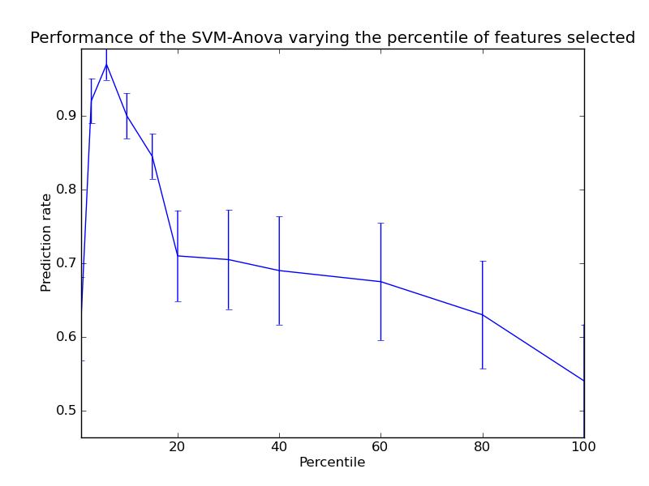

SVM-Anova: SVM with univariate feature selection¶
This example shows how to perform univariate feature before running a SVC (support vector classifier) to improve the classification scores.
Python source code: plot_svm_anova.py
print __doc__
import numpy as np
import pylab as pl
from scikits.learn import svm, datasets, feature_selection, cross_val
from scikits.learn.pipeline import Pipeline
################################################################################
# Import some data to play with
digits = datasets.load_digits()
y = digits.target
# Throw away data, to be in the curse of dimension settings
y = y[:200]
X = digits.data[:200]
n_samples = len(y)
X = X.reshape((n_samples, -1))
# add 200 non-informative features
X = np.hstack((X, 2*np.random.random((n_samples, 200))))
################################################################################
# Create a feature-selection transform and an instance of SVM that we
# combine together to have an full-blown estimator
transform = feature_selection.SelectPercentile(feature_selection.f_classif)
clf = Pipeline([('anova', transform), ('svc', svm.SVC())])
################################################################################
# Plot the cross-validation score as a function of percentile of features
score_means = list()
score_stds = list()
percentiles = (1, 3, 6, 10, 15, 20, 30, 40, 60, 80, 100)
for percentile in percentiles:
clf._set_params(anova__percentile=percentile)
# Compute cross-validation score using all CPUs
this_scores = cross_val.cross_val_score(clf, X, y, n_jobs=1)
score_means.append(this_scores.mean())
score_stds.append(this_scores.std())
pl.errorbar(percentiles, score_means, np.array(score_stds))
pl.title(
'Performance of the SVM-Anova varying the percentile of features selected')
pl.xlabel('Percentile')
pl.ylabel('Prediction rate')
pl.axis('tight')
pl.show()